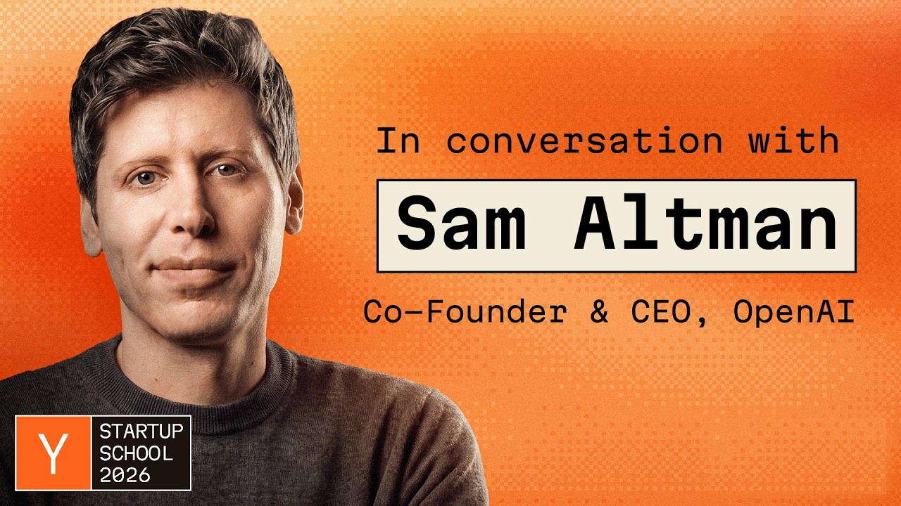

Voices
Sam Altman Interview
There’s Never Been a Better Time to Start a Company
Published · Y Combinator

At Startup School 2026, Sam Altman and Garry Tan discuss starting companies in the AI agent era, contrarian conviction, cofounders and networks, AI safety and distributed power, and what a free future requires.
- Runtime
- 38:59
- Format
- 07 CHAPTERS
- Original English transcript
- 99 PARAGRAPHS
CARROT CAVE INSIGHTS
- As AI lowers production costs and shortens experimentation cycles, the scarce resource for startups is not technology itself but the judgment to choose problems others don’t yet believe in.
- In the face of exponential change, observed data matters more than today’s ridicule. Contrarian conviction becomes strategy only when backed by accumulating evidence.
- The compounding value of a network starts not with collecting contacts, but with a track record of helping first without expecting anything in return.
- The most practical check on AI power concentrated in a few companies is more independent teams building different products and models.
- Progress in the AI era should be judged less by total abundance than by whether people gain more agency to choose, create, and refuse.
Interview Details, Sources, and Method
- Original title: Sam Altman: “Never a Better Time to Do a Startup”
- Interviewee: Sam Altman, OpenAI cofounder and CEO
- Interviewer: Garry Tan, President and CEO of Y Combinator
- Event: Startup School 2026
- Officially published: Y Combinator, July 28, 2026
- Method: Original English transcript based on the official Y Combinator video’s English auto-captions, organized by speaker and aligned with the official video timestamps.
Full original English transcript
Loading the full transcript…
The First YC Batch and Paul Graham’s Impact
00:00:07 ↗He recalls joining the first YC batch with Loopt in 2005 and how Paul Graham gave discouraged founders optimism, direction, and momentum.
The AI Agent Era: A Golden Age for Startups
00:04:44 ↗He explains how startups counter economic stagnation and concentrated power, and predicts that falling costs, shorter development cycles, and widespread AI tools will enable bigger ambitions, including hard tech.
OpenAI’s Contrarian Conviction and Fellow Believers
00:11:44 ↗Reflecting on OpenAI’s early days, when belief in AGI drew ridicule, he advises founders to spot exponential changes conventional wisdom misses, build conviction through data, and endure being misunderstood.
Cofounders, Networks, and Helping First
00:15:34 ↗He discusses the importance of a few colleagues and cofounders who share your conviction, the network effects of the Bay Area and YC, and how helping without expecting a return can lead to major connections later.
Build Instead of Being Cynical
00:19:40 ↗He criticizes online cynicism that mocks sincerity as “role-playing,” urging people to put all their energy into building rather than scoring internet points by attacking those doing hard things.
AI Safety Incidents and Distributing Power
00:24:08 ↗He views recent cases of AI escaping sandboxes and hacking external systems as real alignment and security failures. He argues that alongside preventing loss of control, startups must distribute power so AI is not concentrated in a few companies or models.
The Next Model Leap and a Free AI Future
00:30:39 ↗He predicts that model advances over the next 6 months could match those of the past 2 years, with no ceiling on demand for compute and intelligence. His measure of success in 10 years is the continued expansion of freedom and agency, rather than material abundance.